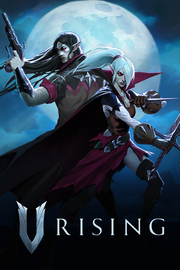

V Rising
Detalles
|  | |
| Tiempo de juego | No Jugado |
| Última actividad | Nunca |
| Añadido | 11/6/2024 15:35:16 |
| Modificado | 11/8/2024 12:00:44 |
| Estado de finalización | No Jugado |
| Librería | Playnite |
| Fuente | 2TB GAS |
| Plataforma | PC (Windows) |
| Fecha de lanzamiento | 5/8/2024 |
| Puntuación de la Comunidad | 87 |
| Puntuación de la Crítica | |
| Puntuación de usuario | |
| Género | Acción Aventura Multijugador masivo |
| Desarrollador | Stunlock Studios |
| Editor | Stunlock Studios |
| Característica | Cloud Saves Compat. Parcial Con Mando Cooperativo Cooperativo En LAN Cooperativo En Línea Jcj Jcj En LAN Jcj En Línea Logros De Multijugador Préstamo Familiar Un Jugador |
| Enlaces | Punto de encuentro Discusiones Guías Noticias Página de la tienda PCGamingWiki Logros |
| Tag | Acción Acción y aventura Aventura Construcción Construcción de bases Cooperativos Cooperativos en línea Exploración Fabricación Fantasía oscura Hack and slash JcE JcJ Multijugador Multijugador masivo Mundo abierto Sandbox Supervivencia Un jugador Vampiros |
Descripción
Una Experiencia de Supervivencia Vampírica
Despierta siendo un vampiro debilitado tras siglos de letargo. Parte de cacería en busca de sangre para recuperar tu fuerza, a la par vez que te escondes de la abrasadora luz solar. Reconstruye tu castillo y transforma a humanos en tus leales sirvientes en una misión para alzar tu imperio vampírico. Haz aliados o enemigos jugando en linea o juega sólo, desafiando a soldados sagrados y batallando en la guerra de un mundo sumido en conflicto.
¿Serás tú quien se alce como el próximo Drácula?
Explora un vasto mundo a rebosar de horrores mitólogicos y peligro.Viaja a través de exhuberantes bosques, grandes campos rurales y oscuras cavernas para descubrir valiosos recursos, haciendo tanto amigos, como enemigos en el camino. Adentrate en este mundo junto a tus camaradas vampíricos o sé el cazador solitario mientras saqueas aldeas, asaltas a bandidos y te adentras en los dominios de bestias sobrenaturales.

Permanece en las sombras durante el día, o la abrasadora luz del sol te reducirá a cenizas. Merodea durante la noche y acecha a tus víctimas en la oscuridad. Como vampiro, debes saciar tu sed de sangre mientras planeas que estrategias llevar a cabo durante el día o la noche.

Recolecta recursos y descubre técnicas ancestrales para obtener poderes oscuros. Usa los conocimientos adquiridos para construir un castillo donde poder atesorar tu botín y alzar tu ejército de las tinieblas. Personaliza tu dominio, exhibe tu estilo vampírico y asegúrate de crear ataúdes para el reposo de tus sirvientes y amigos. Fortalece tu castillo y proteje tus preciados tesoros de vampiros rivales.

Viaja en solitario o explora el mundo junto a tus amigos. Luchar codo con codo junto a otros vampiros te dará la ventaja para conquistar las mayores amenazas de Vardorant. Asedia los castillos de otros jugadores o toma el camino diplomático en un juego de sangre, poder y traición. Compite o coopera- La elección está en tus manos.

Aprende y domina un arsenal de armas mortíferas y poderes impíos. En V Rising apuntas tus "skill-shots" con el cursor del ratón y esquivas proyectiles usando precisos controles WASD, sin movimiento por click. Personaliza tu vapiro a la medida de tu estilo de juego al combinar armas con una variedad de hechizos obtenidos al derrotar poderosos enemigos. Domina tus habilidades y desata tus poderes malignos.

Despierta siendo un vampiro debilitado tras siglos de letargo. Parte de cacería en busca de sangre para recuperar tu fuerza, a la par vez que te escondes de la abrasadora luz solar. Reconstruye tu castillo y transforma a humanos en tus leales sirvientes en una misión para alzar tu imperio vampírico. Haz aliados o enemigos jugando en linea o juega sólo, desafiando a soldados sagrados y batallando en la guerra de un mundo sumido en conflicto.
¿Serás tú quien se alce como el próximo Drácula?
Un mundo abierto de estilo Gótico
Explora un vasto mundo a rebosar de horrores mitólogicos y peligro.Viaja a través de exhuberantes bosques, grandes campos rurales y oscuras cavernas para descubrir valiosos recursos, haciendo tanto amigos, como enemigos en el camino. Adentrate en este mundo junto a tus camaradas vampíricos o sé el cazador solitario mientras saqueas aldeas, asaltas a bandidos y te adentras en los dominios de bestias sobrenaturales.
Teme la luz - Regenta la noche
Permanece en las sombras durante el día, o la abrasadora luz del sol te reducirá a cenizas. Merodea durante la noche y acecha a tus víctimas en la oscuridad. Como vampiro, debes saciar tu sed de sangre mientras planeas que estrategias llevar a cabo durante el día o la noche.
Alza tu castillo
Recolecta recursos y descubre técnicas ancestrales para obtener poderes oscuros. Usa los conocimientos adquiridos para construir un castillo donde poder atesorar tu botín y alzar tu ejército de las tinieblas. Personaliza tu dominio, exhibe tu estilo vampírico y asegúrate de crear ataúdes para el reposo de tus sirvientes y amigos. Fortalece tu castillo y proteje tus preciados tesoros de vampiros rivales.
Compite o Coopera
Viaja en solitario o explora el mundo junto a tus amigos. Luchar codo con codo junto a otros vampiros te dará la ventaja para conquistar las mayores amenazas de Vardorant. Asedia los castillos de otros jugadores o toma el camino diplomático en un juego de sangre, poder y traición. Compite o coopera- La elección está en tus manos.
Domina a tu Vampiro
Aprende y domina un arsenal de armas mortíferas y poderes impíos. En V Rising apuntas tus "skill-shots" con el cursor del ratón y esquivas proyectiles usando precisos controles WASD, sin movimiento por click. Personaliza tu vapiro a la medida de tu estilo de juego al combinar armas con una variedad de hechizos obtenidos al derrotar poderosos enemigos. Domina tus habilidades y desata tus poderes malignos.